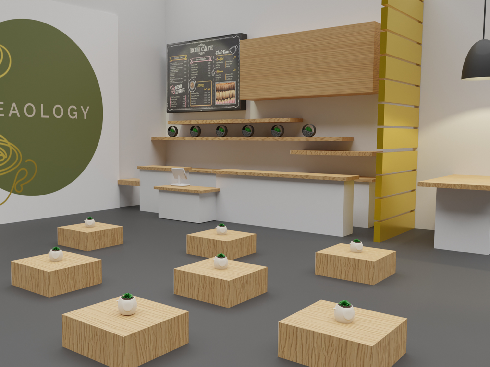

This render was created as a part of a team branding campaign for a company called Teaology. The company aimed to occupy semi-permanent pop-up locations in metropolitan across the nation. This was how my team envisioned their use of such spaces. I handled some of the modelling and all of the texturing, lighting, and final rendering.
Other Projects
Teaology Renderings
